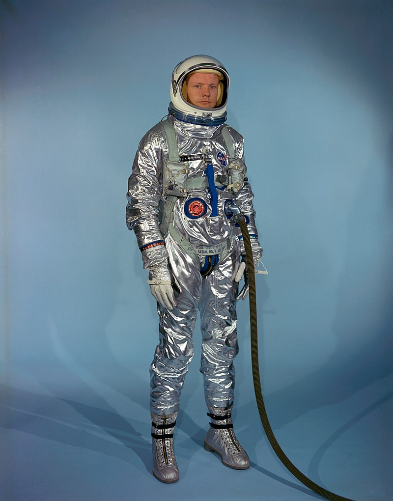
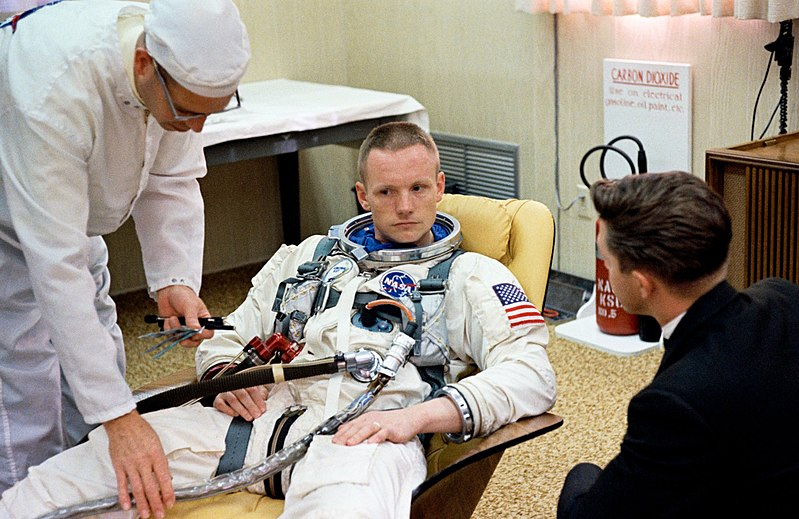
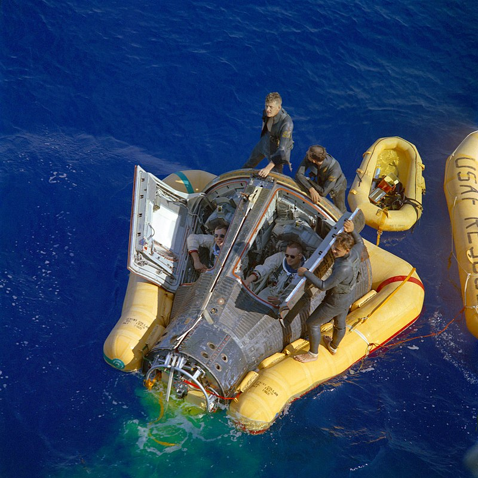
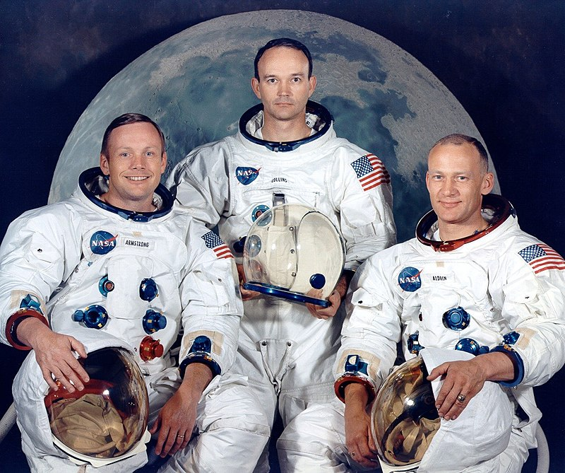

Life History
Early life
Armstrong was born near Wapakoneta, Ohio,on August 5, 1930, the son of
ola Louise (née Engel) and Stephen Koenig Armstrong. He was of German,
Scots-Irish, and Scottish descent. He had a younger sister, June,
and a younger brother, Dean. His father was an auditor for the Ohio
state government,[4] and the family moved around the state repeatedly,
living in 16 towns over the next 14 years.[5] Armstrong's love for
flying grew during this time, having started at the age of two when
his father took him to the Cleveland Air Races. When he was five or
six, he experienced his first airplane flight in Warren, Ohio, when
he and his father took a ride in a Ford Trimotor (also known as the
"Tin Goose")
Navy Service
Armstrong's call-up from the Navy arrived on January 26, 1949,
requiring him to report to Naval Air Station Pensacola in Florida
for flight training with class 5-49. After passing the medical
examinations, he became a midshipman on February 24, 1949.
Flight training was conducted in a North American SNJ trainer,
in which he soloed on September 9, 1949. On March 2, 1950,
he made his first aircraft carrier landing on USS Cabot,
an achievement he considered comparable to his first solo flight.
He was then sent to Naval Air Station Corpus Christi in Texas for
training on the Grumman F8F Bearcat, culminating in a carrier landing
on USS Wright. On August 16, 1950, Armstrong was informed by letter
that he was a fully qualified naval aviator. His mother and sister
attended his graduation ceremony on August 23, 1950.
College years
After his service with the Navy, Armstrong returned to Purdue.
His previously earned good but not outstanding grades now
improved, lifting his final Grade Point Average (GPA) to a
respectable but not outstanding 4.8 out of 6.0. He pledged the
Phi Delta Theta fraternity, and lived in its fraternity house.
He wrote and co-directed two musicals as part of the all-student
revue. The first was a version of Snow White and the Seven Dwarfs,
co-directed with his girlfriend Joanne Alford from the Alpha Chi
Omega sorority, with songs from the Walt Disney film, including
"Someday My Prince Will Come"; the second was titled The Land of
Egelloc ("college" spelled backwards), with music from Gilbert and
Sullivan but new lyrics. He was chairman of the Purdue Aero Flying
Club, and flew the club's aircraft, an Aeronca and a couple of Pipers,
which were kept at nearby Aretz Airport in Lafayette, Indiana.
Flying the Aeronca to Wapakoneta in 1954, he damaged it in a rough
landing in a farmer's field, and it had to be hauled back to
Lafayette on a trailer.
Test Pilot
Following his graduation from Purdue,
Armstrong became an experimental research test pilot. He applied at
the National Advisory Committee for Aeronautics (NACA) High-Speed
Flight Station at Edwards Air Force Base.[37] NACA had no open positions,
and forwarded his application to the Lewis Flight Propulsion Laboratory
Cleveland, where Armstrong made his first test flight on March 1, 1955.
Armstrong's stint at Cleveland lasted only a couple of months before a
position at the High-Speed Flight Station became available, and he
reported for work there on July 11, 1955.
Personal Life
When Armstrong applied at a local Methodist church to lead a Boy Scout troop in the late 1950s,
he gave his religious affiliation as "deist".[193] His mother later
said that his religious views caused her grief and distress in later
life, as she was more religious.[194] Upon his return from the Moon
, Armstrong gave a speech in front of the U.S. Congress in which he
thanked them for giving him the opportunity to see some of the
"grandest views of the Creator".[195][196] In the early 1980s,
he was the subject of a hoax claiming that he converted to Islam after
hearing the call to prayer while walking on the Moon
Astronaut Career
Gemini 5

On February 8, 1965, Armstrong and Elliot See were picked as the backup crew for Gemini 5, with Armstrong as commander, supporting the prime crew of Gordon Cooper and Pete Conrad.[65] The mission's purpose was to practice space rendezvous and to develop procedures and equipment for a seven-day flight, all of which would be required for a mission to the Moon. With two other flights (Gemini 3 and Gemini 4) in preparation, six crews were competing for simulator time, so Gemini 5 was postponed. It finally lifted off on August 21.[66] Armstrong and See watched the launch at Cape Kennedy, then flew to the Manned Spacecraft Center (MSC) in Houston.[67] The mission was generally successful, despite a problem with the fuel cells that prevented a rendezvous. Cooper and Conrad practiced a "phantom rendezvous", carrying out the maneuver without a target.[68]
Gemini 8

The crews for Gemini 8 were assigned on September 20, 1965. Under the normal rotation system, the backup crew for one mission became the prime crew for the third mission after, but Slayton designated David Scott as the pilot of Gemini 8.[69][70] Scott was the first member of the third group of astronauts, who was selected on October 18, 1963, to receive a prime crew assignment.[71] See was designated to command Gemini 9. Henceforth, each Gemini mission was commanded by a member of Armstrong's group, with a member of Scott's group as the pilot. Conrad would be Armstrong's backup this time, and Richard F. Gordon Jr. his pilot.[69][70] Armstrong became the first American civilian in space. (Valentina Tereshkova of the Soviet Union had become the first civilian—and first woman—nearly three years earlier aboard Vostok 6 when it launched on June 16, 1963
Gemini 11

In Armstrong's final assignment in the Gemini program, he was the back-up Command Pilot for Gemini 11. Having trained for two flights, Armstrong was quite knowledgeable about the systems and took on a teaching role for the rookie backup Pilot, William Anders.[87] The launch was on September 12, 1966,[88] with Conrad and Gordon on board, who successfully completed the mission objectives, while Armstrong served as a capsule communicator (CAPCOM)
Apollo Program

On January 27, 1967—the day of the Apollo 1 fire—Armstrong was in Washington, D.C. with Cooper, Gordon, Lovell and Scott Carpenter for the signing of the United Nations Outer Space Treaty. The astronauts chatted with the assembled dignitaries until 18:45, when Carpenter went to the airport, and the others returned to the Georgetown Inn, where they each found messages to phone the MSC. During these calls, they learned of the deaths of Gus Grissom, Ed White and Roger Chaffee in the fire. Armstrong and the group spent the rest of the night drinking scotch and discussing what had happened.
Life after Apollo
Teaching
Shortly after Apollo 11, Armstrong stated that he did not plan to fly in space again.[162] He was appointed Deputy Associate Administrator for Aeronautics for the Office of Advanced Research and Technology at ARPA, served in the position for a year, then resigned from it and NASA in 1971.[163] He accepted a teaching position in the Department of Aerospace Engineering at the University of Cincinnati,[164] having chosen Cincinnati over other universities, including his alma mater Purdue, because Cincinnati had a small aerospace department,
NASA commissions
In 1970, after an explosion aboard Apollo 13 aborted its lunar landing, Armstrong was part of Edgar Cortright's investigation of the mission. He produced a detailed chronology of the flight. He determined that a 28-volt thermostat switch in an oxygen tank, which was supposed to have been replaced with a 65-volt version, led to the explosion. Cortright's report recommended the entire tank be redesigned at a cost of $40 million. Many NASA managers, including Armstrong, opposed the recommendation, since only the thermostat switch had caused the problem. They lost the argument and the tanks were redesigned
Business activities
After Armstrong retired from NASA in 1971, he acted as a spokesman for several businesses. The first company to successfully approach him was Chrysler, for whom he appeared in advertising starting in January 1979. Armstrong thought they had a strong engineering division, and they were in financial difficulty. He later acted as a spokesman for other American companies, including General Time Corporation and the Bankers Association of America.[172] He acted as a spokesman for only American companies
North pole expedition
In 1985, professional expedition leader Mike Dunn organized a trip to take men he deemed the "greatest explorers" to the North Pole. The group included Armstrong, Edmund Hillary, Hillary's son Peter, Steve Fossett, and Patrick Morrow. They arrived at the Pole on April 6, 1985. Armstrong said he was curious to see what it looked like from the ground, as he had seen it only from the Moon.[176] He did not inform the media of the trip, preferring to keep it private
Public Profile
Armstrong's family described him as a "reluctant American hero".[178][179][180] He kept a low profile later in his life, leading to the belief that he was a recluse.[181][182] Recalling Armstrong's humility, John Glenn, the first American to orbit Earth, told CNN: "[Armstrong] didn't feel that he should be out huckstering himself. He was a humble person, and that's the way he remained after his lunar flight, as well as before."[183] Armstrong turned down most requests for interviews and public appearances.
Content is Taken from Wikipedia